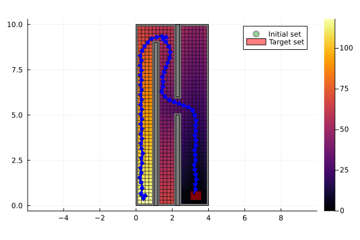
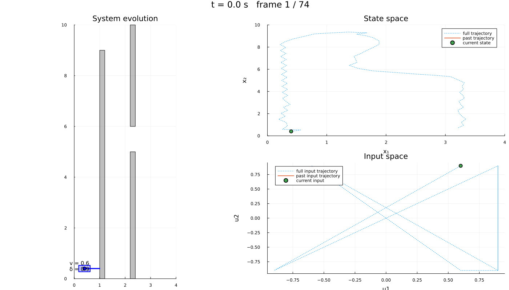

Path planning: steering a vehicle through a maze
| System | 3-D continuous, nonlinear |
| Specification | reach-avoid |
| Solver | uniform grid abstraction |
A rear-wheel-drive vehicle has to cross a corridor blocked by three walls and stop in a parking spot. Its state is the position $(x_1, x_2)$ together with the orientation $x_3$; the inputs are the rear-wheel velocity $u_1$ and the steering angle $u_2$:
\[\dot{x} = \begin{bmatrix} u_1 \cos(α+x_3)\sec(α) \\ u_1 \sin(α+x_3)\sec(α) \\ u_1 \tan(u_2) \end{bmatrix}, \qquad α = \arctan(\tan(u_2)/2), \qquad u \in [-1, 1]^2 .\]
The model is from (Reissig et al., 2016; IX. Examples, A), with the vehicle dynamics of (Åström and Murray, 2007; Ch. 2.4).
using StaticArrays, JuMP, Plots
import LazySets
using Symbolics, MathOptSymbolicAD
using Dionysos
const DI = Dionysos
const UT = DI.Utils
const ST = DI.System
const MP = DI.Mapping
const AB = DI.Optim.Abstraction;The model
model = Model(Dionysos.Optimizer);The variable bounds are the state and input constraint sets — there is nothing else to declare them with.
x_low, x_upp = [0.0, 0.0, -pi - 0.4], [4.0, 10.0, pi + 0.4]
@variable(model, x_low[i] <= x[i = 1:3] <= x_upp[i], start = [0.4, 0.4, 0.0][i])
@variable(model, -1 <= u[1:2] <= 1);@expression(model, α, atan(tan(u[2]) / 2))
@constraint(model, ∂(x[1]) == u[1] * cos(α + x[3]) * sec(α))
@constraint(model, ∂(x[2]) == u[1] * sin(α + x[3]) * sec(α))
@constraint(model, ∂(x[3]) == u[1] * tan(u[2]));The target is a box in the plane. Leaving x[3] out means the orientation is free: a coordinate with no final constraint falls back to its own bounds, so any heading counts as having arrived.
@constraint(model, final(x[1]) in MOI.Interval(3.0, 3.6))
@constraint(model, final(x[2]) in MOI.Interval(0.3, 0.8));The three walls are carved out of the state space with ∉, so those cells are never built. That is the right operator for a region where the model simply does not apply — Always would keep the cells and ask the controller to avoid them, which is a different and more expensive question (see the manual).
walls = [([1.0, 0.0], [1.2, 9.0]), ([2.2, 0.0], [2.4, 5.0]), ([2.2, 6.0], [2.4, 10.0])]
for (lo, hi) in walls
@constraint(model, x[1:2] ∉ MOI.HyperRectangle(lo, hi))
endThe abstraction
The growth bound over-approximates how far a cell can spread in one time step; it is what makes the abstraction sound, so it must hold for every admissible input.
function jacobian_bound(u)
β = abs(u[1] / cos(atan(tan(u[2]) / 2)))
return SMatrix{3, 3}(0.0, 0.0, 0.0, 0.0, 0.0, 0.0, β, β, 0.0)
end
set_attribute(model, "jacobian_bound", jacobian_bound)
set_attribute(model, "approx_mode", AB.UniformGridAbstraction.GROWTH)
set_attribute(model, "time_step", 0.3)
set_attribute(
model,
"state_grid",
MP.GridFree(SVector(0.0, 0.0, 0.0), SVector(0.2, 0.2, 0.2)),
)
set_attribute(model, "input_grid", MP.GridFree(SVector(0.0, 0.0), SVector(0.3, 0.3)))
set_attribute(model, "print_level", 0);Solving
optimize!(model);┌ Warning: The `state_cost` is not yet fully implemented
└ @ Dionysos.Optim.Abstraction.UniformGridAbstraction ~/.julia/packages/Dionysos/3pkaO/src/optim/continuous_systems/UniformGridAbstraction/optimal_control_problem.jl:162Results
termination_status(model)OPTIMAL::TerminationStatusCode = 1A failure here would read LOCALLY_INFEASIBLE rather than INFEASIBLE: the abstraction is sound but not complete, so it can only ever report that this discretisation admits no controller — a finer grid may still succeed.
The trailing semicolons matter: without them Documenter prints the returned object into the page, and a controller over a fine grid is hundreds of kilobytes of text.
abstract_system = get_attribute(model, "abstract_system");
abstract_value_function = get_attribute(model, "abstract_value_function");
concrete_problem = get_attribute(model, "concrete_problem");
concrete_controller = get_attribute(model, "concrete_controller");The value function is the certificate: for every abstract state it bounds the worst-case cost of reaching the target under the synthesized controller.
Closed loop
simulate takes the stopping criterion from the specification — here, reaching the target.
trajectory = Dionysos.simulate(model, SVector(0.4, 0.4, 0.0); nsteps = 100);Visualisation
The specification sets are 3-D, so they are projected onto the plotted plane explicitly: plot!(concrete_problem) would hand LazySets a 3-D polytope, which needs a convex-hull backend. Everything else already defaults to dims = [1, 2].
fig = plot(; aspect_ratio = :equal)
plot!(concrete_problem.system.X; color = :grey, opacity = 1.0, label = "")
plot!(abstract_system; value_function = abstract_value_function)
plot!(
UT.project_set(concrete_problem.initial_set, [1, 2]);
color = :green,
opacity = 0.4,
label = "Initial set",
)
plot!(
UT.project_set(concrete_problem.target_set, [1, 2]);
color = :red,
opacity = 0.5,
label = "Target set",
)
plot!(trajectory; ms = 2.0, color = :blue)
The same run as an animation: the vehicle in its maze on the left, the state and input channels on the right.
include(
joinpath(
dirname(dirname(pathof(Dionysos))),
"problems",
"PathPlanning",
"path_planning.jl",
),
);
obstacles = [
LazySets.Hyperrectangle(; low = SVector(lo...), high = SVector(hi...)) for
(lo, hi) in walls
];
anim = Dionysos.animate_trajectory_dashboard(
PathPlanning.system_plot!(; obstacles = obstacles, xlims = (0, 4), ylims = (0, 10)),
trajectory;
xdims = (1, 2),
udims = (1, 2),
Δt = 0.3,
frame_step = 2,
xlims_state = (0, 4),
ylims_state = (0, 10),
xlabel_state = "x₁",
ylabel_state = "x₂",
);
gif(anim; fps = 5)
This page was generated using Literate.jl.